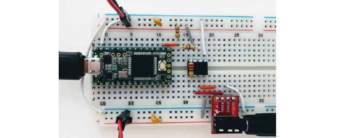
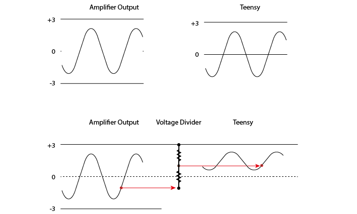

Exercises Day 4 TA¶
Bonsai¶
Bonsai is a visual reactive programming language. It’s great for data acquisition, because it can easily deal with asynchronous datastreams.
SOME PRACTICE EXERCISES HERE
ex_day_4
EMG into PC¶
Use the circuit from yesterday. Instead of reading into our oscilloscope, we will feed the signals to our pc through the Teensy microcontroller.
Shifting the signal¶
The EMG signal is from -3 to +3V, but we can only digitize positive voltages. With a simple trick we can shift the signal up from -3 to 3V exactly into the 0-3V range we want, while still providing the amplifier with a -3 to +3V range.
Add a voltage divider to your EMG circuit
 
This voltage divider is not going to mess with our signal, because the signal is protected by the amplifier. You could in theory use almost any reasonable values for R, over 1kΩ, because the output impedance of the instrumentation amplifier is low and the input impedance (of the teensy analog input) is decently high. If you make R too small, this will still work on paper, but you’re now asking the op-amp to keep shovelling current into ground (or in this case, the 3V rail) through a small R, and eventually even an op-amp will get unhappy.
Streaming data from a microcontroller¶
We’re going to start streaming data to the pc, by using our Teensy microcontroller to digitize the analog signals we collect.
Connect the output from your amplifier to an analog input node on the Teensy as shown below. This is a 220 Ohm resistor across the instrumentation amplifier, and a voltage divider made of two equal resistors (anything above 1KOhm, see the text on ‘shifting the bipolar signal up’ below).
Upload ‘Firmata.ino’ to the Teensy (code here: Firmata )
Open Bonsai and create an Analog Input node. Double-click to visualise your signal.
Connect this to a ‘Csv Writer’ node to save your signals.
Note
It should work with just ‘AnalogInput’. It’s nicer to use the ‘CreateArduino’ node and specify the Teensy, this also allows you to set the sampling interval, so you can increase it if the computer is struggling. Use .csvwriter to save signals.